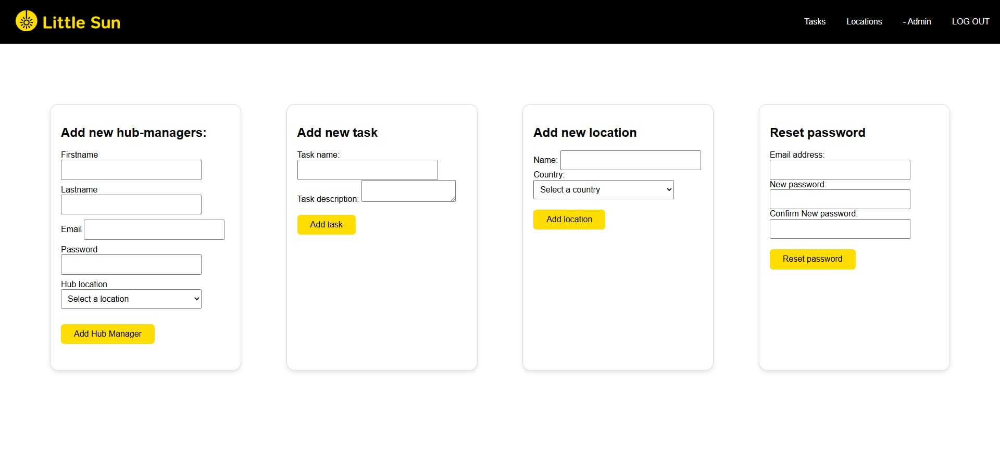
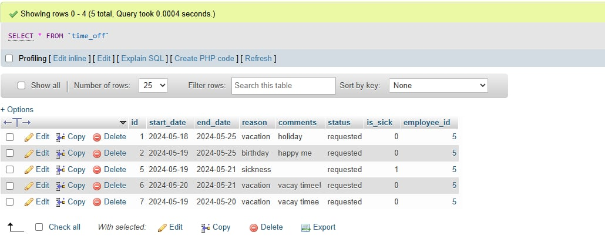

Uitgelichte case
Little Sun
Een digitale werkomgeving voor een team dat duurzame landbouw en zonne-innovatie ondersteunt.

Overzicht
Little Sun is een organisatie die zonne-energie inzet om duurzame landbouw te ondersteunen. Voor dit groepsproject ontwierpen en ontwikkelden we een interne Work Hub waarmee teams roosters, taken en werkuren op één plek kunnen beheren.
Interface-structuur, UI-consistentie en ondersteuning bij implementatie.
Duidelijke dashboards, rolgebaseerde toegang en betere interne communicatie.
HTML, CSS, JavaScript, PHP en MySQL.
Proces
1. Vereisten bepalen
We brachten eerst de noden van de verschillende gebruikersgroepen in kaart en vertaalden die naar een praktische interne tool. Het doel was om de belangrijkste acties snel vindbaar te houden.
- Persoonlijk dashboard voor elke gebruiker
- Overzicht van werkroosters en toegewezen taken
- Timesheetbeheer voor het registreren van uren
- Interne meldingen voor taakupdates en roosterwijzigingen
2. Systeemarchitectuur en wireframes
We brachten de databasestructuur, gebruikersrechten en paginastromen in kaart vóór de developmentfase. De wireframes maakten het eenvoudiger om de dashboards overzichtelijk en consistent te houden.
- Front-end: HTML, CSS en JavaScript voor interactie
- Back-end: PHP (objectgeoriënteerd)
- Database: MySQL
3. Development en samenwerking
We verdeelden het werk in duidelijke verantwoordelijkheden: database en authenticatie, dashboard-UI en de dynamische rooster- en timesheetfunctionaliteit. Regelmatige check-ins hielden het team op één lijn.
- Database en authenticatie
- Dashboard-UI en UX
- Dynamische rooster- en timesheetfuncties
4. Eindresultaat
Het eindplatform liet gebruikers veilig inloggen, gepersonaliseerde dashboards bekijken en met roosters en taken werken. Managers konden taken toewijzen en aanpassen, terwijl medewerkers uren konden bijhouden en updates konden volgen.
In één oogopslag
Interne communicatie en werkadministratie hadden één duidelijke digitale plek nodig.
Een rolgebaseerde hub bouwen met dashboards, roosters en taakbeheer.
Ik kan een functionele bedrijfsnoden vertalen naar een gestructureerd digitaal product.
Galerij


Waarom deze case telt
Dit project toont dat ik ook aan functionele, systeemgerichte producten kan werken in plaats van alleen visuele concepten. Het bewijst ook dat ik samenwerking tussen design en back-endlogica begrijp.